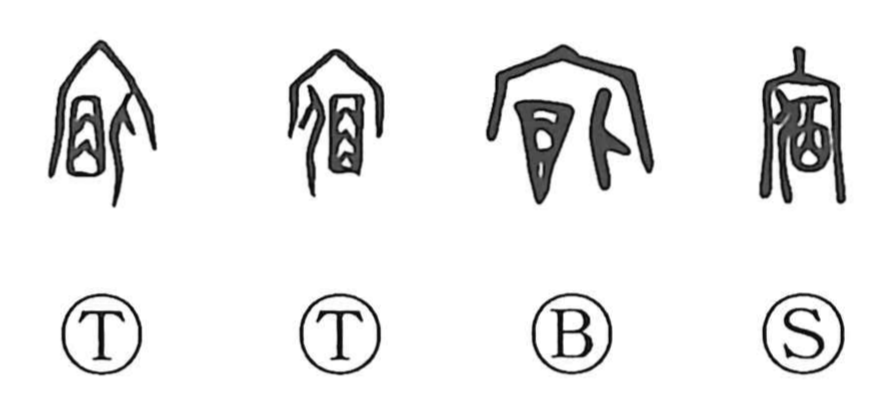

宿

Kun: yado, yadoru, yadosu, tonoi | On: shuku
lodging ・ inn ・ to lodge ・ to stay ・ night watch
Explanation
宿 places 𠈇 beneath 宀, the roof of an ancestral sanctuary. The inner element shows a person lying on 㐁, a mat. The person stays overnight in the sacred building, keeping watch and remaining in attendance.
Such a stay could also be part of purification before a ceremony. Remaining apart in advance of the rite gave 宿 a sense of preparation and observance, alongside lodging or dwelling.
What stays through the night can become what remains for a long time. 宿 therefore extends to something old, long held, or lingering: a cherished wish, an established intention, an old resentment, or a condition that remains into the next day.